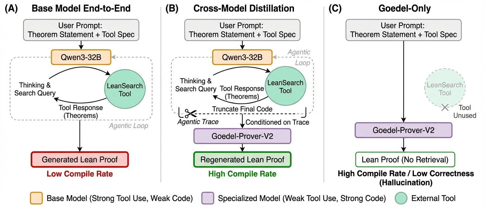

Shows 100 Lean-specific agentic traces restore tool use in the Goedel-Prover model.
Abstract
Heavy supervised fine-tuning on a target domain can strongly suppress capabilities that were present in the base model. We study this phenomenon in formal mathematics using Goedel-Prover-V2, an open-source model heavily trained on 1.8 million formal-math examples. After domain specialization, the model almost completely loses its ability to produce valid tool calls, even when explicitly instructed to use tools, dropping from 89.4% function-calling accuracy in the base model to nearly 0%. We ask whether this agentic collapse is permanent or instead reversible. To answer this question, we fine-tune the specialized model on a small amount of Lean-specific tool-use data. Remarkably, as few as 100 agentic traces are sufficient to restore strong tool-calling behavior. Importantly, this recovery is not the result of reward hacking or benchmark-specific optimization: the recovery data is entirely drawn from the Lean setting, where the model uses natural-language queries to search the Mathlib library for relevant theorems and lemmas, yet the regained capability transfers well beyond that domain. In particular, these same 100 Lean-specific traces improve performance on the Berkeley Function Calling Leaderboard from near zero to 83.8%, approaching the base model's 89.4% despite the mismatch in task distribution and protocol. The recovered capability is also practically useful in-domain. On ProofNet, pass@32 improves from 21.51% to 25.81%. Together, these results show that heavy domain supervised fine-tuning can suppress general tool-use ability without permanently erasing it, and that a small amount of domain-specific agentic data can awaken dormant tool-use capabilities.
Problem
Heavy supervised fine-tuning on formal mathematics (1.8M examples) causes Goedel-Prover-V2 to completely lose its tool-calling capability, dropping from 89.4% function-calling accuracy to nearly 0%. It was unknown whether this collapse is permanent or reversible.
Approach
The authors fine-tune the domain-specialized model on small amounts of Lean-specific agentic data (tool-use traces involving Mathlib search calls). A cross-model distillation pipeline uses Qwen3-32B to produce agentic prefixes, then Goedel-Prover-V2 regenerates the final proof code. Training sets range from 100 to 18K traces.

Figure 2: Cross-model trace distillation pipeline. (A) Qwen3-32B runs the full agentic loop (tool calls + Lean code) but produces low-quality code. (B) We keep Qwen3-32B ’s agentic prefix and have Goedel-Prover-V2-32B-SFT regenerate the final proof, then filter for compilation success and retrieval grounding. (C) Goedel-Prover-V2-32B-SFT alone generates strong Lean code but skips tool use entirely
Results
As few as 100 Lean-specific agentic traces restore tool-calling from 0% to 83.8% on the Berkeley Function Calling Leaderboard (base model: 89.4%). On ProofNet, pass@32 improves from 21.51% to 25.81%. The recovery generalizes beyond Lean despite training only on Lean-specific traces.